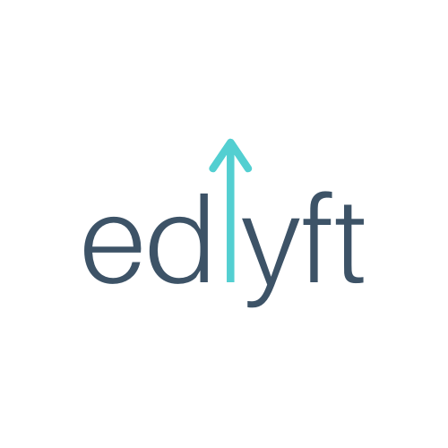
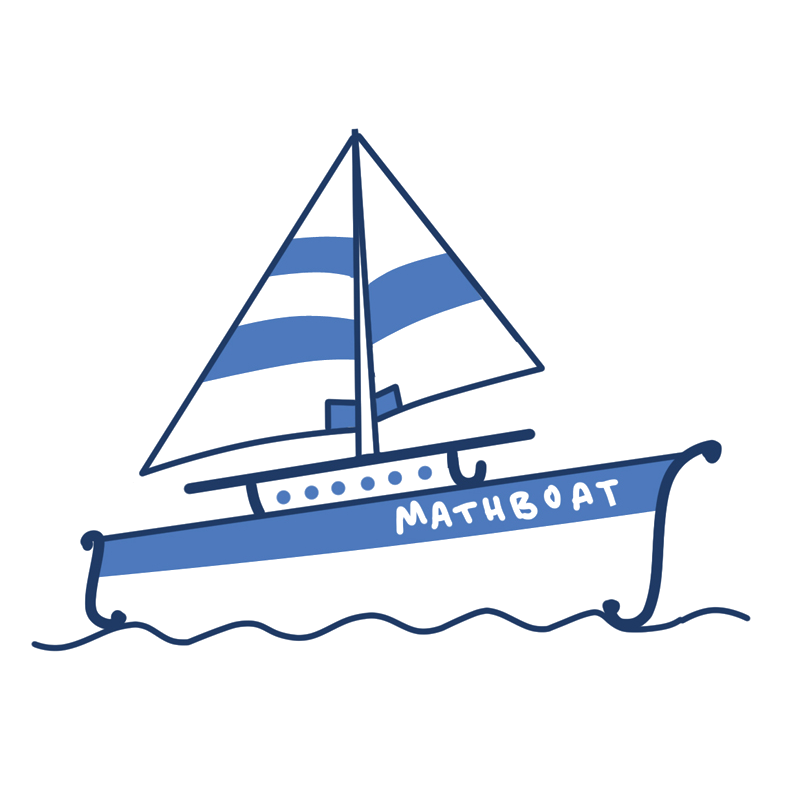
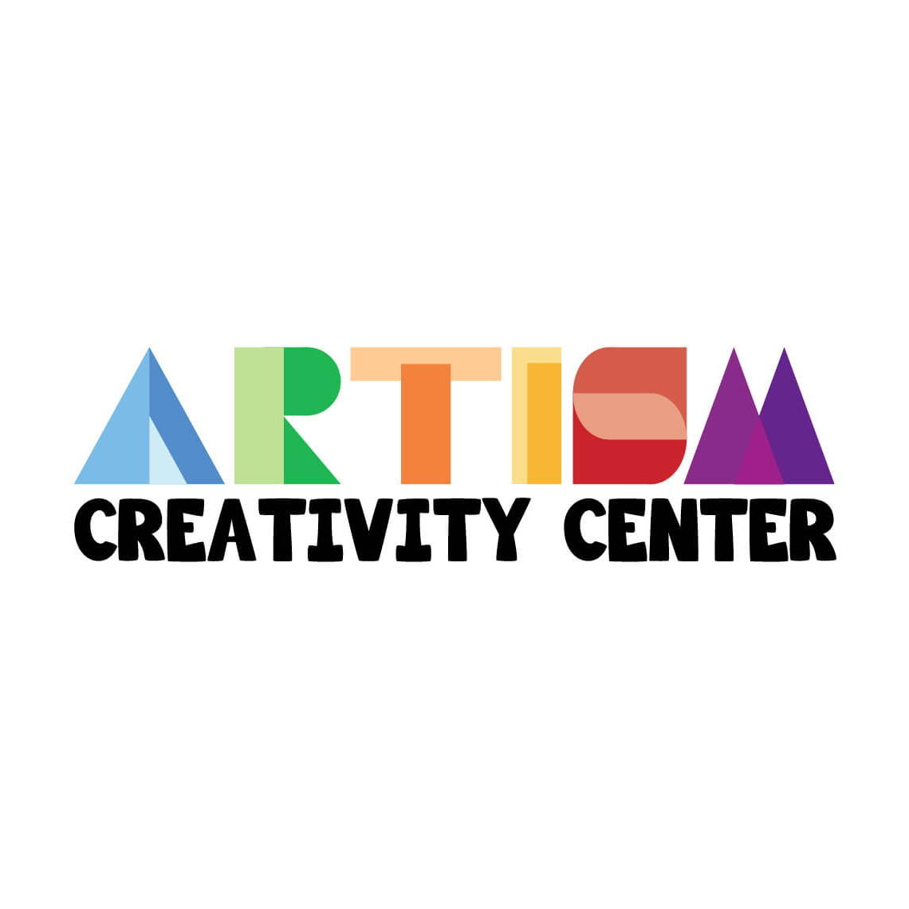
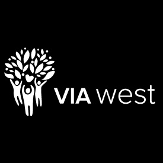
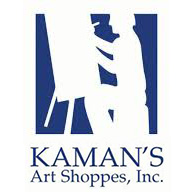
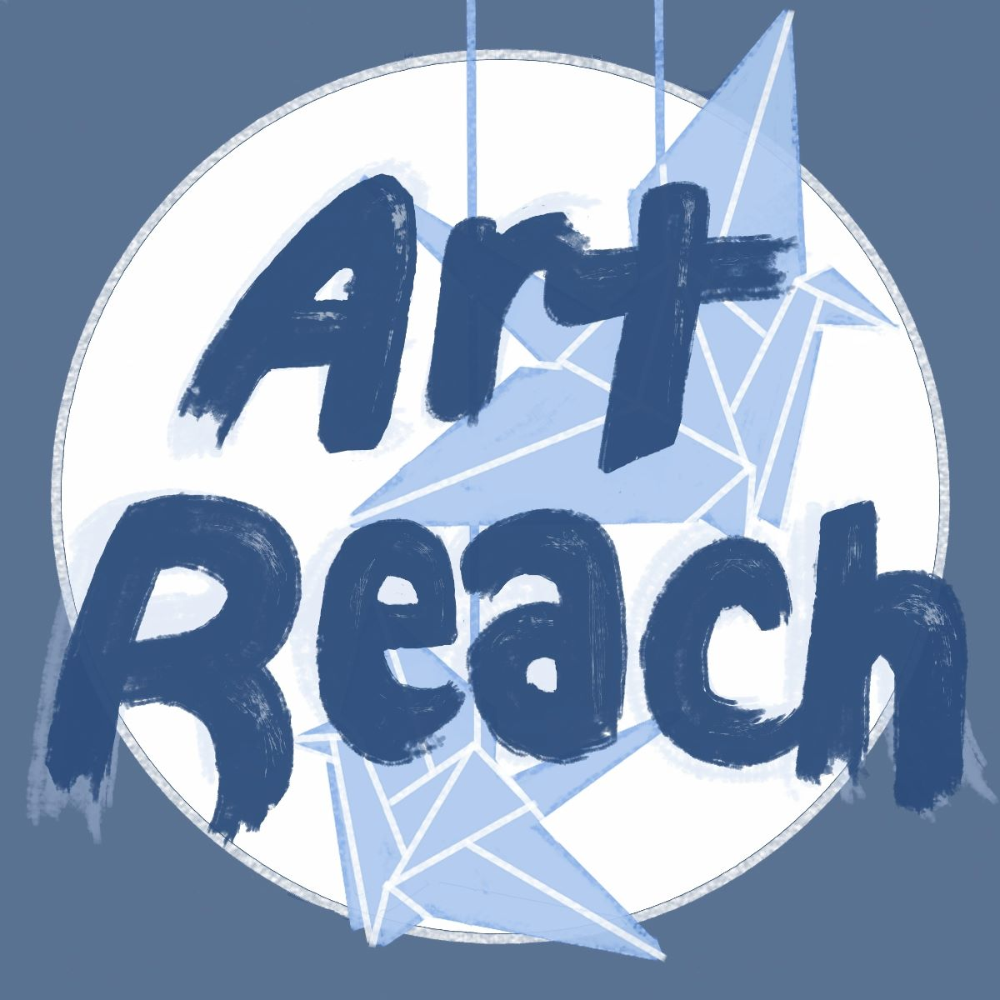

Experience

Edlyft (Ycombinator W20 Startup)
Internship - Mentor for CS61BL Cohort
May 2020 - Present
- Mentor a cohort of 10+ students enrolled in Berkeley's CS61BL
- Design a five-module curriculum to help students prepare for UC Berkeley's CS61BL
- Lead weekly sessions that review course material (Java, Data Structures, Algorithms)
- Hold office hours for students to ask conceptual questions or request debugging help
- Actively answer students' questions 24/7 on Slack or email

UC BERKELEY ELECTRICAL ENGINEERING & COMPUTER SCIENCE (EECS) Department
Academic Intern for CS61BL (Data Structures)
June 2020 - Present
- Help students debug code in lab sections for labs and projects
- Teach students course concepts (Java, Data Structures, Sorting Algorithms, Graphs)
HYGIENE HEROES - HAAS PROFESSOR DAVID I. LEVINE
Research Assistant & Game Developer
Januaray 2020 - Present
- Design a Game Engine that allows designers to create a variety of board games easily
- Developing the Game Engine with LibGDX and Java

SOCIETY OF WOMEN ENGINEERS (SWE)
SWE++ Co-Chair
May 2020 - Present
- Lead a 10-week coding program to teach middle school girls Python and Scratch
- Contact other campus organizations and corporate companies for Code Day
- Coordinate technical workshops for students attending Code Day
Elementary & Middle School Outreach Officer
December 2019 - May 2020
- Planned monthly SWE Science events for local elementary and middle school students
- Taught elementary and middle school students various engineering concepts (including Laws of Motion, Non-Newtonian Fluids, Genetics, Aerodynamics)
- Assembled educational resources for families, including a SWE Science Science Kit
- Led a committee in executing and planning these events
SWE Science Committee Member
September 2019 - December 2019
- Helped plan monthly SWE Science events for local elementary and middle school students
- Volunteered to teach elementary and middle school students various engineering concepts (including Laws of Motion, Non-Newtonian Fluids, Genetics, Aerodynamics)
- Contributed new ideas to improve the SWE Science curriculum and program

ASSOCIATION OF WOMEN IN EE & CS (AWE)
Operations Officer
December 2019 - Present
- Manage budget, funding, and reimbursements
- Update and maintain the club website
- Record meeting notes from officer meetings
- Plan and lead club events, including The Cal Day Virtual Panel

MathBoat Company
Cover Designer & Publication Assistant
July 2019 - Present
- Design and create cover illustrations for textbooks and workbooks
- Assist in the publication process to allow books to be sold on Amazon

The Buddy Organization
Special Needs Mentor and Buddy
July 2017 - June 2019
- Met once a week at a student's house for a 1 to 1.5 hour class session
- Worked with an 8-year-old to improve social, math, and art skills

Artism Creativity Center
Volunteer Art Teacher
November 2015 - June 2019
- Taught children with Autism art
- Guided children with Autism to help them learn and develop soft skills
- Researched Autism and Art Therapy to improve the learning environment for children with Autism within Artism Creativity Center

Via West Services
Special Needs Camp Counselor
May 2018 - July 2018
- Watched over and supervised one to three camp participants with special needs
- Assisted campers with daily routines (showering, changing clothes, eating)
- Took campers to camp activities (arts and crafts, sports, cooking)

Great America Kaman's Art Shoppes
Antique Photo Studio Photographer
April 2018 - June 2018
- Informed customers about various photo packages
- Dressed customers according to their selected era (Roaring 20’s, Victorian, Civil War, Western) and set up props
- Posed customers for a series of photos
- Edited and filtered photos
- Worked with customers to select and print out their favorites
- Framed photos upon request

Lynbrook Artreach Club
President
June 2017 - June 2019
- Led a 7 person officer team in planning member meetings and creating crafts for local nonprofits
- Coordinated details for art sales at craft fairs
- Organized various craft projects, member socials, fundraisers, and club promotion
Activities Coordinator
May 2016 - June 2017
- Contacted local nonprofit organizations
- Created presentations with instructions for members
- Bought craft materials and researched projects
Lynbrook Vertigo Literary Magazine
Co-Art Editor
May 2017 - June 2019
- Communicated with the Editor-in-Chief to plan out the publication timeline
- Coordinated the illustration process for the literary magazine
- Paired artists on the art team with writers for each issue
- Designed cover art illustrations for each issue
- Designed club promotion material